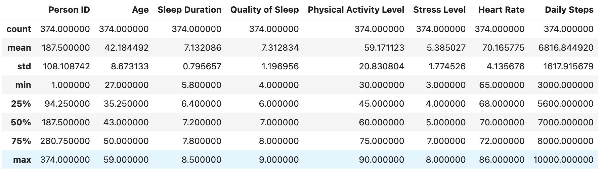
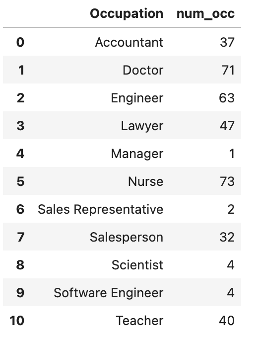
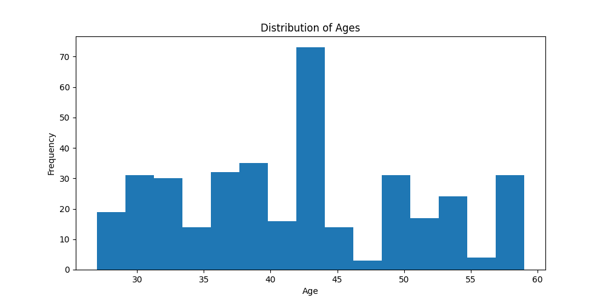
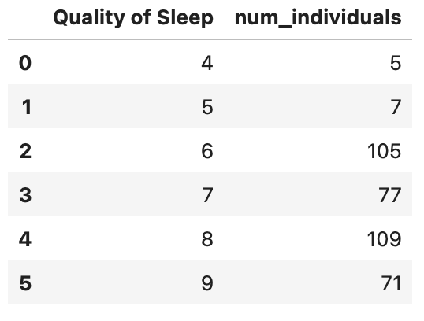
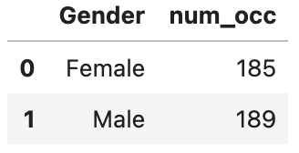
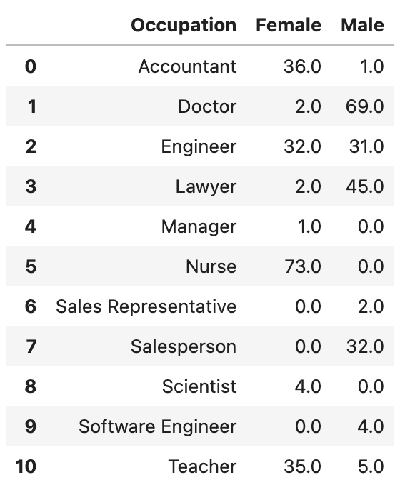

Introduction
This study aims to predict job roles accurately by analyzing the relationship between sleep patterns, job classification, and other relevant factors. By utilizing sleep-related data and demographics in a model, the researchers seek to optimize workforce planning and develop personalized workplace strategies
Problem Statement
The research aims to improve human resource management strategies and personalized workplace interventions by accurately predicting job classifications through the analysis of sleep patterns and other health-related factors, exploring the relationship between sleep, stress, and job characteristics.
Research Questions
To what extent do sleep patterns, along with other factors, correlate with a person’s job classification?
How accurately can a classification model predict a person’s job based on their sleep patterns and other relevant factors?
import pandas as pd
import numpy as np
import seaborn as sns
import matplotlib.pyplot as plt
from sklearn.ensemble import RandomForestClassifier
from sklearn.model_selection import train_test_split
from sklearn.preprocessing import LabelEncoder
from sklearn.metrics import accuracy_score
from sklearn.decomposition import PCA
print("Libraries imported successfully!")
import os
file_path = '/Users/Shared/Python/Sleep_health_and_lifestyle_dataset.csv'
# Check if the file exists
if os.path.exists(file_path):
print("File exists, proceeding to load.")
try:
sleep = pd.read_csv(file_path)
print("File loaded successfully.")
print(sleep.head()) # Print the first few rows to confirm the data is loaded
except Exception as e:
print(f"An error occurred while loading the file: {e}")
else:
print("File does not exist, please check the file path.")
sleep = pd.read_csv(file_path)
import pandas as pd
import seaborn as sns
file_path = '/Users/Shared/Python/Sleep_health_and_lifestyle_dataset.csv'
sleep = pd.read_csv(file_path)
sleep.info()
sleep.describe()
# Select some columns that might have a correlation
numerical_data = sleep[['Age', 'Sleep Duration','Quality of Sleep','Physical Activity Level', 'Stress Level','Heart Rate', 'Daily Steps']]
correlation_matrix = numerical_data.corr()
# Generate the heatmap and use a new color sheme
ax = sns.heatmap(correlation_matrix, annot=True, cmap="PuOr");
fig = ax.get_figure()
Correlation of Numeric Variables
import pandas as pd
import seaborn as sns
import matplotlib.pyplot as plt
file_path = '/Users/Shared/Python/Sleep_health_and_lifestyle_dataset.csv'
sleep = pd.read_csv(file_path)
# Select some columns that might have a correlation
numerical_data = sleep[['Age', 'Sleep Duration','Quality of Sleep','Physical Activity Level', 'Stress Level','Heart Rate', 'Daily Steps']]
correlation_matrix = numerical_data.corr()
# Generate the heatmap and use a new color sheme
plt.figure(figsize=(10, 8))
ax = sns.heatmap(correlation_matrix, annot=True, cmap="PuOr");
fig = ax.get_figure()
plt.title('Correlation Matrix of Selected Features')
plt.show()
Occupation By The Numbers
import pandas as pd
import seaborn as sns
file_path = '/Users/Shared/Python/Sleep_health_and_lifestyle_dataset.csv'
sleep = pd.read_csv(file_path)
sleep.Occupation.unique()
sleep.groupby('Occupation').agg(
num_occ=('Occupation', 'size')
).reset_index()import pandas as pd
import seaborn as sns
file_path = '/Users/Shared/Python/Sleep_health_and_lifestyle_dataset.csv'
sleep = pd.read_csv(file_path)
def occupation_group(row):
if row["Occupation"] in ["Salesperson", "Sales Representative", "Manager"]:
return "Sales"
elif row["Occupation"] in ["Software Engineer", "Scientist", "Accountant"]:
return "STEM"
elif row["Occupation"] in ["Doctor", "Nurse"]:
return "Medical"
else:
return row["Occupation"]
sleep["Occupation_Group"] = sleep.apply(occupation_group, axis=1)
Look at distribution based on Age
import pandas as pd
import seaborn as sns
import matplotlib.pyplot as plt
file_path = '/Users/Shared/Python/Sleep_health_and_lifestyle_dataset.csv'
sleep = pd.read_csv(file_path)
# Look at the distribution based on Age
fig, ax = plt.subplots(figsize=(10, 5))
ax.hist(sleep['Age'], bins=15)
ax.set_title('Distribution of Ages')
ax.set_xlabel('Age')
ax.set_ylabel('Frequency')
plt.show()
Stress Level
import pandas as pd
import seaborn as sns
import matplotlib.pyplot as plt
file_path = '/Users/Shared/Python/Sleep_health_and_lifestyle_dataset.csv'
sleep = pd.read_csv(file_path)
sleep.groupby('Stress Level').agg(
num_individuals=('Stress Level', 'size')
).reset_index()Sleep Duration
import pandas as pd
import seaborn as sns
import matplotlib.pyplot as plt
file_path = '/Users/Shared/Python/Sleep_health_and_lifestyle_dataset.csv'
sleep = pd.read_csv(file_path)
# Look at the distribution based on Age
fig, ax = plt.subplots(figsize=(10, 5))
ax.hist(sleep['Sleep Duration'], bins=20)
ax.set_title('Distribution of Sleep Duration')
ax.set_xlabel('Sleep Duration')
ax.set_ylabel('Frequency')
plt.show()
#Figure out who is 8.5?
Quality of Sleep
import pandas as pd
import seaborn as sns
import matplotlib.pyplot as plt
file_path = '/Users/Shared/Python/Sleep_health_and_lifestyle_dataset.csv'
sleep = pd.read_csv(file_path)
sleep.groupby('Quality of Sleep').agg(
num_individuals=('Quality of Sleep', 'size')
).reset_index()
Gender
import pandas as pd
import seaborn as sns
import matplotlib.pyplot as plt
file_path = '/Users/Shared/Python/Sleep_health_and_lifestyle_dataset.csv'
sleep = pd.read_csv(file_path)
sleep.groupby('Gender').agg(
num_occ=('Gender', 'size')
).reset_index()
import pandas as pd
import seaborn as sns
import matplotlib.pyplot as plt
file_path = '/Users/Shared/Python/Sleep_health_and_lifestyle_dataset.csv'
sleep = pd.read_csv(file_path)
grouped_data = sleep.groupby(['Gender', 'Occupation']).size().reset_index(name='n')
# Pivot the data to get 'Gender' as columns and 'Occupation' as index
pivot_data = grouped_data.pivot(index='Occupation', columns='Gender', values='n').fillna(0)
# Rename the columns and reset the index
pivot_data.columns.name = None
pivot_data = pivot_data.reset_index()
pivot_data
import pandas as pd
import seaborn as sns
import matplotlib.pyplot as plt
file_path = '/Users/Shared/Python/Sleep_health_and_lifestyle_dataset.csv'
sleep = pd.read_csv(file_path)
# Pivot the data to get 'Gender' as columns and 'Occupation' as index
grouped_data = sleep.groupby(['Stress Level', 'Occupation']).size().reset_index(name='n')
pivot_data = grouped_data.pivot(index='Occupation', columns='Stress Level', values='n').fillna(0)
pivot_data.columns.name = None
pivot_data = pivot_data.reset_index()
pivot_data
# Create the heatmap using seaborn
sns.heatmap(pivot_data.set_index('Occupation'), annot=True, cmap='YlGnBu', fmt='g')
# Set the title and labels
plt.title("Stress Level vs Occupation Heatmap")
plt.xlabel("Stress Level")
plt.ylabel("Occupation")
# Display the heatmap
plt.show()
import pandas as pd
import seaborn as sns
import matplotlib.pyplot as plt
file_path = '/Users/Shared/Python/Sleep_health_and_lifestyle_dataset.csv'
sleep = pd.read_csv(file_path)
# Pivot the data to get 'Gender' as columns and 'Occupation' as index
grouped_data = sleep.groupby(['Quality of Sleep', 'Stress Level']).size().reset_index(name='Total Counts')
# Pivot the data to create a heatmap
pivot_data = grouped_data.pivot(index='Stress Level', columns='Quality of Sleep', values='Total Counts').fillna(0)
# Create the heatmap using seaborn
plt.figure(figsize=(10, 6))
sns.heatmap(pivot_data, annot=True, cmap='YlGnBu', fmt='g')
plt.xlabel('Quality of Sleep')
plt.ylabel('Stress Level')
plt.title('Heatmap of Quality of Sleep vs. Stress Level')
plt.show()
Machine Learning
import pandas as pd
import numpy as np
import seaborn as sns
import matplotlib.pyplot as plt
from sklearn.model_selection import train_test_split
from sklearn.ensemble import RandomForestClassifier
from sklearn.metrics import accuracy_score, ConfusionMatrixDisplay
from sklearn.preprocessing import OneHotEncoder, LabelEncoder
from sklearn.impute import SimpleImputer
# Load the dataset
file_path = '/Users/Shared/Python/Sleep_health_and_lifestyle_dataset.csv'
sleep = pd.read_csv(file_path)
# Separate features and target variable
x = sleep.drop(columns=['Person ID', 'Sleep Disorder', 'Blood Pressure'])
y = sleep['Sleep Disorder']
# Inspect the data for NaNs
print("Checking for NaNs in the dataset:")
print(x.isnull().sum())
# Handle missing values
# Impute numerical columns with mean
numerical_cols = x.select_dtypes(include=['float64', 'int64']).columns
imputer_num = SimpleImputer(strategy='mean')
x[numerical_cols] = imputer_num.fit_transform(x[numerical_cols])
# Impute categorical columns with most frequent value
categorical_cols = ['Gender', 'Occupation', 'BMI Category', 'Stress Level']
imputer_cat = SimpleImputer(strategy='most_frequent')
x[categorical_cols] = imputer_cat.fit_transform(x[categorical_cols])
# Recheck for any remaining NaN values
print("Rechecking for NaNs after imputation:")
print(x.isnull().sum())
# Encode categorical variables
label_encoder = LabelEncoder()
for col in categorical_cols:
x[col] = label_encoder.fit_transform(x[col])
# Ensure there are no NaNs before proceeding
if x.isnull().values.any():
raise ValueError("Data still contains NaN values after handling missing data.")
# Split the data into training and testing sets
x_train, x_test, y_train, y_test = train_test_split(x, y, test_size=0.2, random_state=42)
# One-hot encode the categorical columns
encoder = OneHotEncoder()
x_train_encoded = encoder.fit_transform(x_train[categorical_cols])
x_test_encoded = encoder.transform(x_test[categorical_cols])
# Combine the one-hot encoded features with other numerical features
x_train_final = np.hstack((x_train_encoded.toarray(), x_train.drop(columns=categorical_cols).values))
x_test_final = np.hstack((x_test_encoded.toarray(), x_test.drop(columns=categorical_cols).values))
# Fit the RandomForestClassifier and make predictions
rf_classifier = RandomForestClassifier(n_estimators=100, random_state=42)
rf_classifier.fit(x_train_final, y_train)
y_pred = rf_classifier.predict(x_test_final)
accuracy = accuracy_score(y_test, y_pred)
print("Accuracy of the random forest classifier:", accuracy)
# Display the confusion matrix
ConfusionMatrixDisplay.from_predictions(y_test, y_pred, labels=rf_classifier.classes_, display_labels=rf_classifier.classes_, cmap="YlGnBu")
plt.show()
Random Forrest vs. SVM Classifier
import pandas as pd
import numpy as np
from sklearn.model_selection import train_test_split
from sklearn.ensemble import RandomForestClassifier
from sklearn.svm import SVC
from sklearn.metrics import confusion_matrix
from sklearn.metrics import ConfusionMatrixDisplay
from sklearn.metrics import accuracy_score
from sklearn.preprocessing import LabelEncoder, OneHotEncoder
#Load the dataset
file_path = '/Users/Shared/Python/Sleep_health_and_lifestyle_dataset.csv'
sleep = pd.read_csv(file_path)
# Assuming 'sleep' is your DataFrame
x = sleep.drop(columns=['Person ID', 'Sleep Disorder', 'Blood Pressure'])
y = sleep['Sleep Disorder']
label_encoder = LabelEncoder()
categorical_cols = ['Gender', 'Occupation', 'BMI Category', 'Stress Level']
for col in categorical_cols:
x[col] = label_encoder.fit_transform(x[col])
# One-hot encode the categorical columns (if needed)
encoder = OneHotEncoder()
x_encoded = encoder.fit_transform(x[categorical_cols])
x_final = np.hstack((x_encoded.toarray(), x.drop(columns=categorical_cols).values))
x_train, x_test, y_train, y_test = train_test_split(x_final, y, test_size=0.2, random_state=42)
# RandomForestClassifier
rf_classifier = RandomForestClassifier(n_estimators=100, random_state=42)
rf_classifier.fit(x_train, y_train)
y_pred_rf = rf_classifier.predict(x_test)
accuracy_rf = accuracy_score(y_test, y_pred_rf)
# SVM Classifier
svm_classifier = SVC(kernel='linear', random_state=42)
svm_classifier.fit(x_train, y_train)
y_pred_svm = svm_classifier.predict(x_test)
accuracy_svm = accuracy_score(y_test, y_pred_svm)
print("Accuracy of the random forest classifier:", accuracy_rf)
print("Accuracy of the SVM classifier:", accuracy_svm)
ConfusionMatrixDisplay.from_predictions(y_test, y_pred_svm, display_labels=svm_classifier.classes_, cmap="YlGnBu")
plt.show()
Clustering
from sklearn.preprocessing import OneHotEncoder, LabelEncoder, StandardScaler
from sklearn.cluster import KMeans
import matplotlib.pyplot as plt
import pandas as pd
# Load the dataset
file_path = '/Users/Shared/Python/Sleep_health_and_lifestyle_dataset.csv'
sleep = pd.read_csv(file_path)
# Assuming 'sleep' is your DataFrame
# Split 'Blood Pressure' into 'Systolic' and 'Diastolic'
bp_split = sleep['Blood Pressure'].str.split('/', expand=True)
sleep['Systolic'] = pd.to_numeric(bp_split[0], errors='coerce')
sleep['Diastolic'] = pd.to_numeric(bp_split[1], errors='coerce')
# Drop the original 'Blood Pressure' column
x = sleep.drop(columns=['Person ID', 'Sleep Disorder', 'Gender', 'Blood Pressure'])
y = sleep['Sleep Disorder']
# Encode categorical variables
label_encoder = LabelEncoder()
categorical_cols = ['Occupation', 'BMI Category', 'Stress Level']
for col in categorical_cols:
x[col] = label_encoder.fit_transform(x[col])
# Normalize the data
scaler = StandardScaler()
x_scaled = scaler.fit_transform(x)
# Perform K-means clustering
kmeans = KMeans(n_clusters=3, random_state=42)
kmeans_clusters = kmeans.fit_predict(x_scaled)
# Visualize the clusters
plt.scatter(x_scaled[:, 0], x_scaled[:, 1], c=kmeans_clusters, cmap='viridis', marker='o')
plt.xlabel('Feature 1')
plt.ylabel('Feature 2')
plt.title('K-means Clustering')
plt.show()
 ## Summary
## Summary
This study delved into the relationship between sleep patterns, job classification, and other relevant factors to accurately predict job roles. By leveraging data analytics and machine learning techniques, we aimed to optimize workforce planning and develop personalized workplace strategies.
Key Insights
1.Correlation Analysis: Identified significant correlations between sleep duration, stress levels, and job classifications.
2.Distribution Analysis: Provided insights into the age and sleep duration distributions among different occupations.
3.Heatmaps Highlighted the relationship between stress levels and sleep quality across various occupations.
4.Machine Learning Models: Demonstrated that Random Forest and SVM classifiers could predict sleep disorders with high accuracy based on sleep-related data.
5.Clustering: K-means clustering revealed distinct groups within the data, indicating potential subgroups with unique sleep and job characteristics.
Conclusions
1.Predictive Power: Sleep patterns, stress levels, and demographic data can effectively predict job classifications.
2.Model Performance: Random Forest classifiers showed promising accuracy, outperforming SVM in this context.
3.Workforce Planning: These insights can inform HR strategies, promoting better sleep health and productivity among employees.
4.Future Research: Further studies can explore additional factors such as dietary habits and mental health for a comprehensive analysis.
This comprehensive analysis underscores the critical role of sleep patterns in predicting job classifications, offering valuable insights for both researchers and HR professionals. By integrating these findings into workforce management strategies, organizations can foster a healthier, more productive work environment.